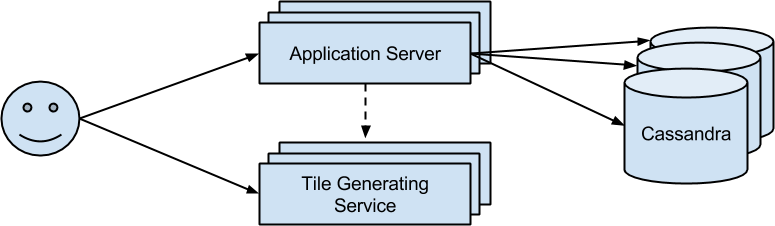

This case study illustrates that Jsonnet can be used to centralize, unify, and manage configuration for all parts of a cloud hosted multi-tier web application (a Mandelbrot viewer). Jsonnet centralizes configuration files for the various application software, database schemas and initial data sets, system configuration files, package manifests, software build configurations, image configurations (Packer) and cloud resources / connectivity (Terraform). Although the running example is deployed on Google Cloud Platform and uses specific application software, Jsonnet can be used to generate configuration for any application and (via Packer & Terraform) a wide range of cloud providers.
Prerequisites: It is assumed that the reader has read the Jsonnet tutorial, and has a basic knowledge of Packer and Terraform.
The example application allows the user to zoom and pan a Mandelbrot fractal (dynamically rendered server side, in C++). The user is able to save the location of features they find, deep in the fractal, and a time-ordered list of these with thumbnails is displayed in the left hand pane. The application is provisionally hosted here, but you can easily deploy your own as all required files are available in the Jsonnet repository.
Although admittedly a little contrived, this example is intended to represent the structure of a typical non-trivial real-world web application. It is an example of micro-service architecture (illustrated below). The services are: An Application Server, a backend database (Cassandra) and a backend service for generating the fractal PNG tiles (C++). Each service is scalable and fault-tolerant.
The Application Server hosts static content (CSS) and Jinja'd HTML. The HTML contains Javascript that issues AJAX requests to 1) the Tile Generating Service and 2) the Application Server (to fetch / amend the discoveries list). The Application Server therefore does not communicate directly with the fractal Tile Generating Service, but it needs to know the host:port endpoint in order to embed it in the HTML so that the user's browser can do so. The user does not communicate directly with the Cassandra database.
Both the Application server and the tile generation service use Nginx, uWSGI and flask to host their content. For the application Server, this means transforming HTTP requests into database accesses and/or serving content (code here). For the tile generation service, this means invoking a compiled C++ executable from the Flask handler in order to construct a PNG for a given tile / thumbnail of the fractal. Both services consist of a group of instances behind a layer 3 cloud load balancer with a static IP and a simple health check. The Cassandra database is simply a set of instances, as the Cassandra client library (used by the Application Server) does client-side load balancing and transparent failover, thus does not need a cloud load balancer.
The application is deployed by first using Packer to build an image for each of the 3 kinds of cloud instances (Application Server, Tile Generating Service, Cassandra). Then, all the cloud resources (instances, load balancers, etc.) are deployed using Terraform. The Packer build compiles, installs and configures all of the required software on each image. The Terraform configuration provides last minute configuration (host:port endpoints, passwords, etc.) to the instances via metadata.
The choice about what configuration to provide at image build time (embedded in Packer configurations) vs deployment time (embedded in Terraform configuration) is up to the user. The advantage of doing more at image build time is that instances can then be deployed more quickly (useful in an auto-scaling situation). But allowing some configuration at deployment time makes the images more flexible. Some configuration (e.g. host:port endpoints) is only known at deployment time so must be specified in the Terraform configuration. In our case, we try to do all time consuming steps (downloading, generating, compiling) in Packer, while leaving finer details until deployment.
Except as noted, this content is licensed under Creative Commons Attribution 2.5.